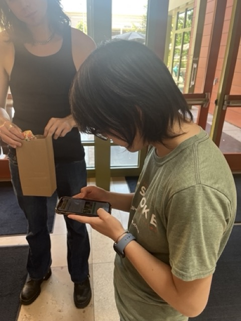

User Test
Significant Observations
- Better instructions for turning on location services for safari so that the locator part works
- Instructions for routing was largely unnecessary and it was confusing when the the ‘you made it’ popup took a while to register
- The Icons for the badge page felt more like a scrapbook, suggested an animation everytime a badge is earned

Things to Update
- Update Landing Page (clear instructions for location services, introduce connection to seal)
- Remove instructions from routing and instead just have the static route with a reroute button and the dynamic footprints (have footprints be immediate)
- Find a different icon for the badge page and have an an animation for the badges when earned